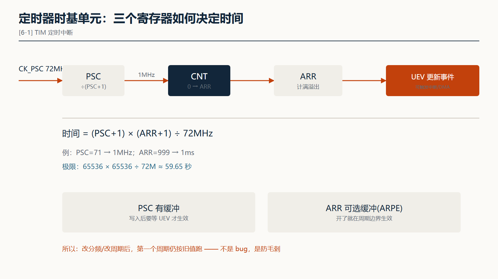

课程时长：约 50 分钟 | 深度版：约 6 页 | 前置：[2-2] 新建工程、[5-1] EXTI 中断、时钟树概念
前面的延时靠 Delay 空转，CPU 被占死；中断那节学会了“事件驱动”，但事件来自外部引脚。这一节把两者接起来：用定时器产生“时间事件”，让 CPU 按固定节拍干活。
更重要的是，定时器不只用来定时。PWM 输出、输入捕获、编码器接口、ADC 触发、DMA 触发，全都建立在同一个“时基单元”上——PSC、CNT、ARR 这三个寄存器。把这一节吃透，后面 6-2 到 6-8 都是它的变体。
前置检查：如果还说不清“72MHz 是怎么来的”“中断服务函数为什么要清标志”，先回看 [1-2] 与 [5-1]。

图 10 定时器时基单元：PSC 分频 → CNT 计数 → ARR 溢出 → UEV
从左往右读：72MHz 的 CK_PSC 先被 PSC 分频，得到计数器真正使用的节拍；CNT 每来一个节拍加 1，数到 ARR 就溢出，产生 UEV。下面两行公式就是从这张图推出来的：时间 = (PSC+1) × (ARR+1) ÷ 72MHz。
图的下半部分是两个容易被忽略的细节：PSC 有缓冲，写进去要等下一次 UEV 才生效；ARR 是否缓冲由 ARPE 决定。这解释了为什么“改完分频，第一个周期还是旧值”——不是程序错了，是硬件故意让变化落在周期边界上，避免出现半个周期的毛刺。
STM32F103 的时钟不是“天生 72MHz”，而是一级一级配出来的：
| 环节 | 取值 | 说明 |
|---|---|---|
| HSE 外部晶振 | 8MHz | 板载晶振，精度高 |
| PLL 倍频 | ×9 | 8 × 9 = 72MHz |
| SYSCLK | 72MHz | 系统时钟，CPU 主频 |
| AHB 预分频 | ÷1 | HCLK = 72MHz |
| APB2 预分频 | ÷1 | PCLK2 = 72MHz，GPIO/USART1/SPI1/ADC 挂这里 |
| APB1 预分频 | ÷2 | PCLK1 = 36MHz，TIM2–7/USART2/I2C 挂这里 |
F103 的 APB1 最高只能 36MHz，但定时器需要高分辨率。硬件做了一个约定：当 APB 预分频系数不为 1 时，送给定时器的时钟自动 ×2。
APB1 预分频 = 2 → PCLK1 = 36MHz 定时器时钟 = PCLK1 × 2 = 72MHz
所以 TIM2–TIM7 的计数时钟仍然是 72MHz，和 TIM1/TIM8（挂 APB2）一样。这一点是面试高频题，也是“算出来的定时时间差一倍”的根源。
反过来验证：如果你把 APB1 预分频改成 1（PCLK1 = 72MHz），定时器时钟就不再 ×2，仍是 72MHz——结果一样，但路径不同。
| 寄存器 | 位宽 | 范围 | 作用 | 关键细节 |
|---|---|---|---|---|
| PSC | 16 位 | 0–65535 | 对时钟预分频，分频系数 = PSC+1 | 有缓冲，写后等 UEV 生效 |
| CNT | 16 位 | 0–65535 | 当前计数值，可读可写 | 写 CNT 会打乱节奏，一般不动 |
| ARR | 16 位 | 0–65535 | 重装载值，计到这里溢出 | ARPE=1 时有缓冲，周期边界生效 |
以向上计数为例，一个完整周期是这样：
CK_PSC 每来一个脉冲 → 预分频计数器 +1 预分频计数器数到 PSC → 清零，并输出一个 CK_CNT 脉冲 CK_CNT 每来一个脉冲 → CNT +1 CNT 计到 ARR → 产生更新事件 UEV，CNT 清零，重新开始
所以“定时”的本质是：数够 (PSC+1) 个时钟，才算 CNT 的一步；CNT 走够 (ARR+1) 步，才算一个周期。
| 模式 | 计数方向 | UEV 产生时机 | 典型用途 |
|---|---|---|---|
| 向上计数 | 0 → ARR，再回 0 | CNT 从 ARR 溢出到 0 时 | 最常用，定时中断 |
| 向下计数 | ARR → 0，再回 ARR | CNT 从 0 下溢到 ARR 时 | 特殊时序、对称波形 |
| 中央对齐 | 0 → ARR → 0，往复 | 上溢和下溢各产生一次 | 电机 PWM，谐波更小 |
注意：中央对齐模式下，一个完整周期里 UEV 会出现两次（一次上溢、一次下溢），所以同样的 PSC/ARR，中断频率是向上计数的两倍——配置时容易算错。
下面这段可以直接用，关键是理解每一行的顺序为什么不能换。
void TIM3_Init_1ms(void)
{
/* 1. 开时钟：TIM3 挂 APB1 */
RCC_APB1PeriphClockCmd(RCC_APB1Periph_TIM3, ENABLE);
/* 2. 时基：72MHz / 72 = 1MHz，1000 个数 = 1ms */
TIM_TimeBaseInitTypeDef t;
t.TIM_Prescaler = 71; /* 72-1：分频 72 */
t.TIM_Period = 999; /* 1000-1：计 1000 个数 */
t.TIM_CounterMode = TIM_CounterMode_Up;
t.TIM_ClockDivision = TIM_CKD_DIV1;/* 只影响输入滤波，不影响计数 */
t.TIM_RepetitionCounter = 0; /* 高级定时器才用 */
TIM_TimeBaseInit(TIM3, &t); /* 内部会顺带产生一次 UEV */
/* 3. 清标志 + 开中断 */
TIM_ClearFlag(TIM3, TIM_FLAG_Update);
TIM_ITConfig(TIM3, TIM_IT_Update, ENABLE);
/* 4. NVIC：分组一定要全工程统一 */
NVIC_PriorityGroupConfig(NVIC_PriorityGroup_2);
NVIC_InitTypeDef n;
n.NVIC_IRQChannel = TIM3_IRQn;
n.NVIC_IRQChannelPreemptionPriority = 1;
n.NVIC_IRQChannelSubPriority = 1;
n.NVIC_IRQChannelCmd = ENABLE;
NVIC_Init(&n);
/* 5. 启动计数 */
TIM_Cmd(TIM3, ENABLE);
}
顺序上的三个“必须”：
必须先开 RCC，否则后面所有寄存器写入都无效（不报错，只是没反应）
必须先配时基再开中断，否则可能带着错误的 ARR 进第一次中断
NVIC 分组必须在 NVIC_Init 之前设置，且整个工程只设一次
volatile uint32_t g_tick = 0; /* 必须 volatile，否则主循环可能读不到变化 */
void TIM3_IRQHandler(void)
{
if (TIM_GetITStatus(TIM3, TIM_IT_Update) != RESET) /* 标志位 + 中断使能都成立 */
{
g_tick++; /* 只做最短的事 */
TIM_ClearITPendingBit(TIM3, TIM_IT_Update); /* 必须清，否则反复进入 */
}
}
| 函数 | 检查什么 | 用在哪 |
|---|---|---|
| TIM_GetITStatus | 中断使能位 + 状态标志位 | 中断服务函数里，判断“是不是我这条中断” |
| TIM_GetFlagStatus | 只看状态标志位 | 轮询、初始化后确认状态 |
初学者常问：为什么不能只用 GetFlagStatus？因为中断可能被别的源触发，只看标志会把“没开中断的事件”也当成自己的。
72MHz ÷ (PSC+1) = 计数频率 目标 1ms → 1000Hz → 计数频率取 1MHz 最方便 PSC+1 = 72 → PSC = 71 ARR+1 = 1000 → ARR = 999 验证：72M / 72 / 1000 = 1000Hz = 1ms ✔
计数频率 1MHz，20ms 需要 20000 个数 但 ARR 最大 65535，20000 可以 → ARR = 19999 PSC = 71，ARR = 19999
计数频率 = 72M / 7200 = 10kHz 周期 = 10000 / 10k = 1s → 1Hz 用途：1 秒一次的慢任务、闪烁
PSC = 65535, ARR = 65535 周期 = 65536 × 65536 / 72MHz ≈ 59.65 秒 超过 1 分钟的需求，必须靠软件计数累加或级联定时器
四个例题的共同点：先算“计数频率”，再算“数多少个数”，最后减 1。忘记减 1 是最常见的错误——差一个数，定时就差一个计数周期。
| 方法 | 操作 | 看到什么说明正确 |
|---|---|---|
| IO 翻转法 | 中断里每 500 次翻转一次 GPIO，用示波器测 | 方波频率 = 1Hz（1ms 中断时） |
| LED 观察 | 每 500 次中断翻转 LED | 1 秒亮灭一次 |
| 计数打印 | 每 1000 次串口打印一次 g_tick | 每秒一行，数值稳定递增 |
| 逻辑分析仪 | 抓中断引脚翻转波形 | 周期稳定、无抖动，说明中断没被阻塞 |
最推荐 IO 翻转 + 示波器：不占串口、不受打印影响，频率一测就知道 PSC/ARR 算没算对。
| 错误写法 | 现象 | 正确做法 |
|---|---|---|
| 只 TIM_Cmd，没有 TIM_ITConfig | 不进中断 | 两处使能都要开 |
| TIM_ITConfig 开了，没配 NVIC | 不进中断 | NVIC_Init 使能对应通道 |
| 中断里不清标志 | 卡在中断里反复进，主程序几乎不跑 | TIM_ClearITPendingBit |
| PSC/ARR 忘记减 1 | 定时差一个计数周期（约 0.1%–1%） | PSC=71 而不是 72 |
| 按 36MHz 算 APB1 定时器 | 实际时间差一倍 | 按 72MHz 算 |
| ISR 里 Delay_ms(10) | 主程序严重卡顿，其他中断被延迟 | 只置标志，主循环处理 |
| g_tick 没加 volatile | 主循环永远等不到变化 | volatile uint32_t |
有了 1ms 滴答，就能做一个极简的任务调度器，避免到处写 Delay：
typedef struct { uint16_t period; uint16_t cnt; void (*task)(void); } SoftTimer;
SoftTimer timers[] = {
{ 500, 0, LED_Task }, /* 每 500ms */
{ 100, 0, Key_Task }, /* 每 100ms */
};
void TIM3_IRQHandler(void)
{
if (TIM_GetITStatus(TIM3, TIM_IT_Update) != RESET)
{
for (int i = 0; i < 2; i++)
if (++timers[i].cnt >= timers[i].period) { timers[i].cnt = 0; timers[i].task(); }
TIM_ClearITPendingBit(TIM3, TIM_IT_Update);
}
}
注意：任务函数本身要短。如果某个任务要 10ms，放在中断里会挤掉其他任务——这就是后面要学 RTOS 的原因。
| 后续章节 | 复用了什么 | 变化点 |
|---|---|---|
| 6-3 输出比较 | 同一套时基 | 用 CCR 比较，翻转/置位引脚 |
| 6-4 PWM | 同一套时基 | 频率仍由 PSC/ARR 决定，占空比由 CCR 决定 |
| 6-5 输入捕获 | 同一个 CNT | 把外部边沿的时刻记进 CCR |
| 6-7 编码器 | 同一个 CNT | 硬件根据 A/B 相自动加减 CNT |
所以 PSC/ARR 不是“定时中断专用”，而是所有定时器功能的公共底座。这一节算错，后面全错。
Q1. 72MHz 是怎么来的？
A：HSE 8MHz 经 PLL ×9 得到；PLL 源可选 HSE 或 HSI/2，标准库 SystemInit 默认配 HSE。
Q2. 为什么 APB1 是 36MHz，定时器却能拿 72MHz？
A：APB 预分频不为 1 时，定时器时钟自动 ×2，这是硬件约定。
Q3. PSC 写入后立刻生效吗？
A：不，PSC 有缓冲，要等下一次更新事件 UEV；可用 UG 位或 TIM_PrescalerConfig 立即重装。
Q4. ARR 的预装载是干什么的？
A：ARPE=1 时新值在周期边界生效，避免计数中途改周期导致波形撕裂。
Q5. 更新事件有哪几种来源？
A：计数器溢出/下溢、软件置 UG 位、从模式触发。
Q6. 定时器最大能定多长时间？
A：PSC 与 ARR 都是 16 位，72MHz 下约 59.65 秒。
Q7. 中断里能不能改 ARR？
A：能，但要注意缓冲：开了 ARPE 会在下个周期生效；频繁改会引入抖动。
Q8. 为什么 ISR 里不能延时？
A：ISR 执行期间同级与低优先级中断被阻塞，主程序停摆，实时性崩溃。
Q9. 软件定时器和 RTOS 定时器区别？
A：前者是中断里轮询任务表，任务是“顺带”执行的；后者由调度器管理优先级与阻塞。
Q10. 两个定时器怎么级联？
A：一个定时器的 UEV 作为另一个的时钟源（ITR），扩大计时范围。
Q11. 中央对齐模式为什么用于电机？
A：PWM 波形对称，谐波更小，电流纹波低。
Q12. 怎么用定时器测频率？
A：输入捕获：记录两个上升沿的 CNT 差值，频率 = 时钟 / 差值（6-5 详讲）。
1. PSC=71、ARR=999、72MHz，中断周期是多少？
答：1ms。72M/72=1MHz，1000 个数。
2. 要 5ms 中断，PSC 和 ARR 怎么配？
答：PSC=71（1MHz），ARR=4999（5000 个数）。
3. ARR 最大 65535，要 10 秒怎么办？
答：PSC=7199 得 10kHz，ARR=99999 超范围；改 PSC 更大或软件累加。
4. 为什么 NVIC 分组要全工程统一？
答：分组决定抢占/子优先级的位数划分，混用会让优先级比较失去意义。
5. TIM_GetITStatus 和 GetFlagStatus 区别？
答：前者同时检查中断使能位与标志位，后者只看标志。
6. 中断里只置标志的好处？
答：缩短 ISR，避免阻塞其他中断，把耗时处理留给主循环。
7. 中央对齐模式中断频率为何翻倍？
答：一个周期内上溢和下溢各产生一次 UEV。
8. 改 PSC 后读数没变，为什么？
答：PSC 有缓冲，尚未到 UEV，新分频还没生效。
☐ 能画出 72MHz 的时钟路径
☐ 能解释 APB1 ×2 规则
☐ 能默写 PSC/ARR 公式并减 1
☐ 知道 PSC 与 ARR 的缓冲差异
☐ 能独立配出任意周期的定时中断
☐ 能说出 GetITStatus 与 GetFlagStatus 的区别
☐ 会用 IO 翻转验证频率
☐ 能写一个三任务的软件定时器